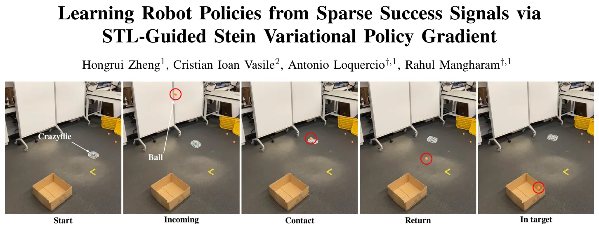
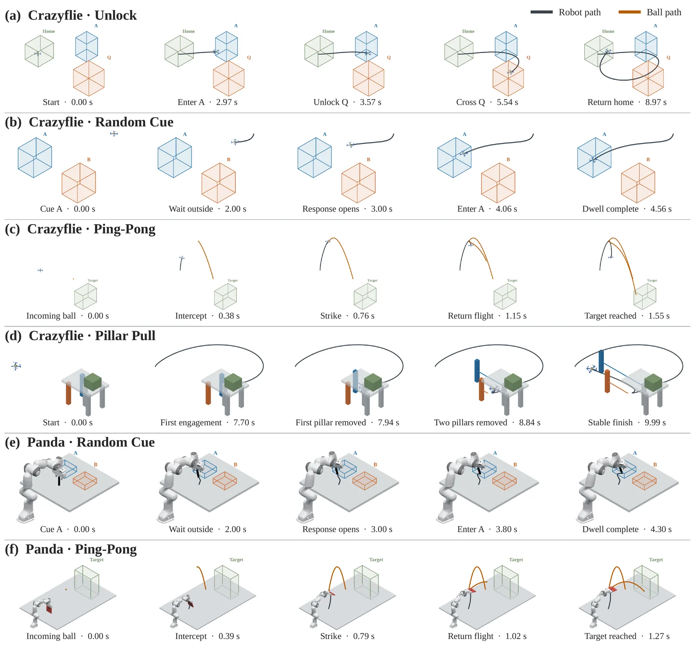
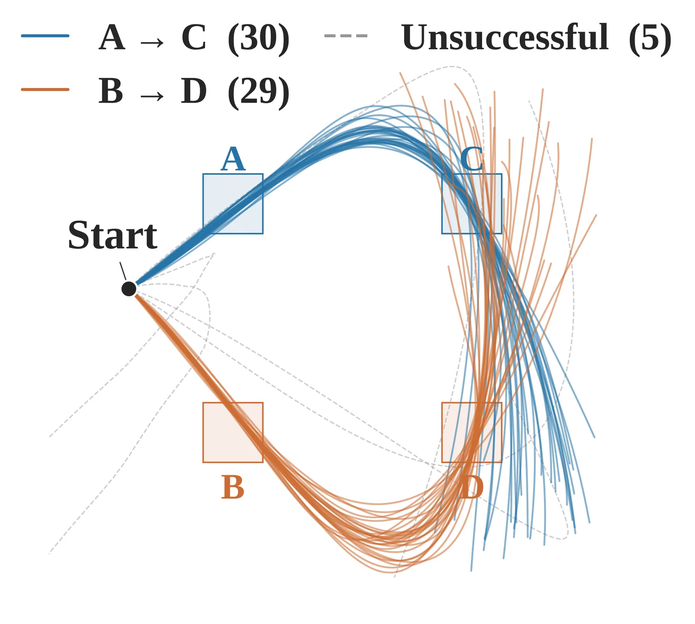
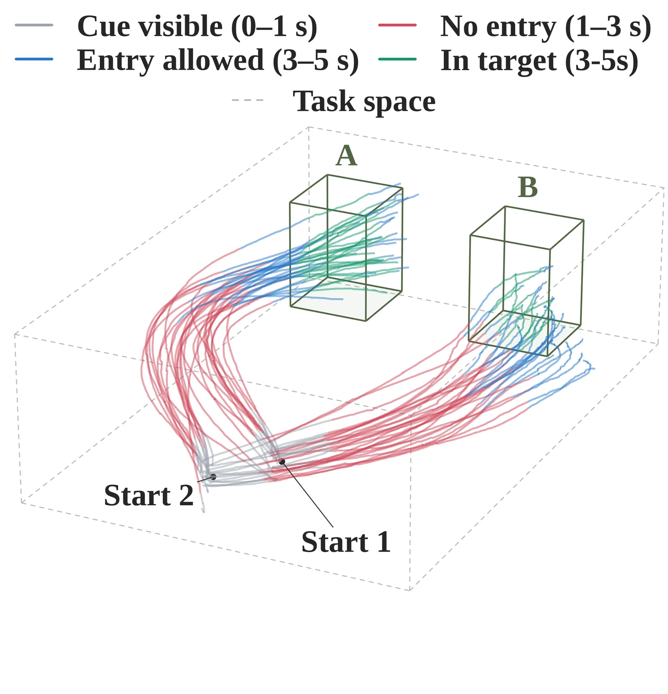

O problema: aprender quando o sucesso é raro
Ensinar um robô a completar tarefas complexas é especialmente difícil quando o sinal de sucesso é esparso. Imagine treinar um drone para jogar pingue-pongue: a recompensa só aparece se a bola voltar e atingir o alvo. Antes disso, centenas de tentativas podem falhar completamente, sem fornecer pista alguma sobre quais ações foram úteis ou inúteis. O robô precisa coordenar vários movimentos, acertar o timing, fazer contato físico preciso e satisfazer várias condições ao mesmo tempo.
A abordagem tradicional é o reward shaping: criar recompensas densas e intermediárias que guiem o aprendizado. O problema é que essas recompensas precisam ser desenhadas manualmente para cada tarefa, e progresso local nem sempre se traduz em sucesso final. Métodos baseados em modelos aprendidos podem planejar à frente, mas erros de predição se acumulam em horizontes longos, e horizontes curtos podem não capturar sequências de ações necessárias para o sucesso.
O paper apresenta STL-SVPG, um método que usa Signal Temporal Logic (STL) para especificar requisitos temporais e lógicos da tarefa, e combina isso com Stein Variational Gradient Descent (SVGD) para treinar uma população de políticas de controle. A ideia central é diferenciar uma medida de robustez STL através da dinâmica do robô, atribuindo crédito a cada ação de acordo com seu efeito no cumprimento completo da especificação, não apenas no progresso local.

Signal Temporal Logic: especificação formal de tarefas
Signal Temporal Logic é uma linguagem formal para especificar requisitos sobre sinais de valores reais ao longo do tempo. Em vez de apenas dizer se uma trajetória satisfaz ou não uma especificação (binário), STL fornece uma semântica de robustez: um número que mede a margem de sucesso ou falha. Quanto maior o valor de robustez, mais longe a trajetória está de violar a especificação.
Essa robustez quantitativa é o que torna STL útil para aprendizado: mesmo trajetórias que falham fornecem feedback informativo. Uma tentativa que quase acertou a bola tem robustez maior que uma que nem chegou perto. O desafio é que otimizar robustez através da dinâmica do robô é difícil: embora a robustez suave permita calcular gradientes, esses gradientes tendem a se concentrar em poucos passos críticos e desaparecer ao longo de trajetórias longas.
Trabalhos anteriores usaram STL para planejamento de sequências de controle em malha aberta, mas o tempo de computação é longo demais para replanejamento online. Outros treinaram políticas de feedback usando robustez STL como recompensa, mas isso deixa a atribuição de crédito temporal para a exploração aleatória. STL-SVPG diferencia a robustez da trajetória completa para treinar políticas de feedback de baixo nível, tornando até rollouts malsucedidos valiosos para o treinamento.
Stein Variational Gradient Descent: otimização populacional
Stein Variational Gradient Descent é um método de otimização que mantém e evolui uma população de partículas (neste caso, políticas de controle). Em vez de treinar uma única política, STL-SVPG treina 64 políticas simultaneamente. Cada política na população contribui para o gradiente das outras através de um kernel que mede similaridade.
A atualização de cada política combina dois termos: um gradiente que empurra a política em direção a maior robustez STL, e um termo de repulsão que mantém diversidade na população. Esse segundo termo é crucial: ele impede que todas as políticas colapsem para a mesma solução e permite descobrir múltiplas formas de completar a tarefa.
O método STL-SVPIO anterior aplicou otimização variacional de Stein para encontrar sequências de controle em malha aberta através de robustez STL diferenciável. STL-SVPG estende essa ideia para aprender políticas de feedback que podem generalizar para novas condições iniciais, amortizando o custo computacional do planejamento online.

As tarefas: timing, ordem e contato físico
Os autores testaram STL-SVPG em seis tarefas usando dois robôs: o drone Crazyflie e o braço manipulador Panda. As tarefas foram escolhidas especificamente por terem sinais de sucesso extremamente esparsos e requererem coordenação temporal ou interação física.
CF Unlock exige que o drone visite duas regiões em ordem específica, dentro de janelas de tempo estritas. CF Random Cue sorteia aleatoriamente um de dois alvos que o drone deve alcançar dentro de um prazo. CF Ping-Pong é a tarefa mais complexa: o drone deve acertar uma bola em movimento para que ela retorne e atinja um alvo distante. CF Pillar Pull requer que o drone puxe um pilar físico para baixo.
As tarefas do Panda seguem estrutura similar: Panda Random Cue sorteia entre dois alvos, Panda Ping-Pong exige acertar uma bola suspensa para atingir um alvo, e todas envolvem restrições temporais estritas. O sucesso só é registrado quando todas as condições são satisfeitas: ordem correta, timing adequado e resultado físico desejado.
Resultados: sucesso onde baselines falham
STL-SVPG alcançou a maior taxa média de sucesso em cinco das seis tarefas. Os números são impressionantes especialmente nas tarefas mais difíceis. Em CF Unlock, atingiu 87,67% de sucesso enquanto PPO e SAC alcançaram zero e TD-MPC2 apenas 0,02%. Em CF Ping-Pong, foi o único método com taxa de sucesso diferente de zero: 11,30%.
Em CF Pillar Pull, foi o único método a ultrapassar 1% de sucesso (5,35%), enquanto PPO e SAC falharam completamente e TD-MPC2 teve sucessos raríssimos. Em Panda Ping-Pong, alcançou 35,78% contra 6,70% do SAC, enquanto PPO falhou totalmente e TD-MPC2 teve apenas 0,32% de sucesso.
As duas únicas tarefas onde baselines foram comparáveis são as Random Cue, que consistem principalmente em alcançar um único objetivo no tempo. Essas tarefas são mais fáceis de resolver com recompensas densas desenhadas manualmente. Mas para tarefas que requerem escalas de tempo mais longas ou interação física com contato, STL-SVPG superou largamente as alternativas.
Ablação 1: otimização direta de STL versus recompensa densa
Para isolar a contribuição da otimização direta de robustez STL, os autores rodaram ablações usando o mesmo procedimento SVPG mas trocando o gradiente. Uma versão usa diferenciação automática de recompensas densas desenhadas manualmente. Outra usa diferenças finitas (finite difference) na recompensa densa, tornando o método caixa-preta.
A otimização STL direta quase dobrou o sucesso em Unlock, de 45,17% para 87,67%, e permitiu completar CF Ping-Pong onde a recompensa densa atingiu zero. Em Random Cue melhorou de 66,07% para 71,93%. A baseline de diferenças finitas alcançou no máximo 0,47%.
Esses ganhos consistentes mostram que mudar apenas o otimizador é insuficiente. A escolha central de design — otimização direta da especificação STL no nível da trajetória — é essencial para alinhar o objetivo de aprendizado com os eventos ordenados e resultados downstream necessários para completar a tarefa. Progresso local medido por recompensas intermediárias não garante sucesso final.
Ablação 2: população versus política única
Outra ablação testou usar apenas uma única partícula no treinamento em vez de 64. Isso equivale essencialmente a usar gradient descent direto nos gradientes STL, sem o componente populacional do SVGD.
Manter uma população de políticas expandiu substancialmente a capacidade de aprendizado. Aumentar de uma para 64 partículas elevou o sucesso médio em todas as tarefas. Em Unlock passou de zero para 87,67%. Em Panda Ping-Pong subiu de 7% (o texto está cortado mas indica melhora significativa).
A população permite duas coisas: primeiro, exploração mais eficiente do espaço de políticas através da diversidade mantida pelo termo de repulsão. Segundo, a capacidade de descobrir múltiplas soluções para a mesma tarefa, o que é especialmente útil quando há várias formas válidas de satisfazer a especificação STL.

Soluções multimodais: a população descobre alternativas
Uma pergunta importante é se STL-SVPG aprende soluções multimodais quando a tarefa permite múltiplas estratégias válidas. Para testar isso, os autores criaram uma variante da tarefa Random Cue chamada Branching, onde há dois pares de objetivos possíveis.
A população de 64 políticas se dividiu naturalmente entre as soluções válidas. Em um reset específico mostrado no paper, 30 políticas convergiram para o caminho A-C, 29 para B-D, e apenas cinco falharam. Isso demonstra que o método não colapsa todas as políticas para uma única solução, mas mantém diversidade e descobre múltiplas formas de satisfazer a especificação.
Essa capacidade de descobrir multimodalidade é valiosa porque tarefas do mundo real frequentemente têm várias soluções válidas, e manter um portfólio de estratégias pode tornar o sistema mais robusto a variações nas condições iniciais ou perturbações durante a execução.
Transferência para o mundo real
Políticas treinadas em simulação foram transferidas para robôs reais sem treinamento adicional. Os autores testaram transferência sim-to-real em tarefas de drone, incluindo a complexa tarefa de pingue-pongue mostrada na primeira figura do paper.
As políticas aprenderam comportamentos temporais e de contato que se transferiram com sucesso. Em Random Cue, o drone real respeitou as restrições de timing, visitando as regiões corretas nas janelas de tempo especificadas. As trajetórias reais mostram fases coloridas que denotam diferentes etapas da tarefa sendo executadas na ordem e timing corretos.
A transferência bem-sucedida é notável porque tarefas com contato físico são particularmente sensíveis a diferenças entre simulação e realidade. O fato de políticas treinadas puramente em simulação conseguirem acertar uma bola real e respeitar timing estrito sugere que a otimização através de robustez STL aprende comportamentos que são robustos a essas diferenças.

O que o paper não mostra
O paper tem limitações importantes que vale explicitar. Primeiro, todas as tarefas testadas são relativamente curtas em duração e número de etapas. Não está claro como o método escala para tarefas com dezenas de sub-objetivos ou horizontes de tempo muito longos, onde o problema de gradientes desaparecendo pode se tornar mais severo.
Segundo, o método requer uma especificação STL da tarefa, o que é uma forma de conhecimento prévio. Embora os autores argumentem que escrever especificações STL é mais natural que desenhar recompensas densas, ainda é necessário formalizar os requisitos da tarefa em lógica temporal. Para tarefas onde os requisitos são difíceis de especificar formalmente, isso pode ser uma barreira.
Terceiro, treinar 64 políticas simultaneamente tem custo computacional. O paper não fornece análise detalhada de tempo de treinamento ou eficiência amostral comparada aos baselines. Também não está claro como o método se comporta quando o número de partículas é reduzido para valores intermediários entre 1 e 64.
Finalmente, a transferência sim-to-real foi demonstrada apenas em tarefas de drone. Não há resultados de transferência para o braço Panda, que envolve dinâmica de contato potencialmente mais complexa. A generalização do método para outros tipos de robôs e tarefas permanece uma questão em aberto.
Por que isso importa
STL-SVPG aborda um problema fundamental em robótica: como aprender políticas de controle quando o feedback é extremamente esparso e o sucesso depende de coordenação temporal precisa. A abordagem é conceitualmente elegante porque usa a mesma especificação formal para definir a tarefa e guiar o aprendizado, reduzindo a engenharia manual de recompensas.
A combinação de lógica temporal com otimização populacional baseada em gradientes é nova e os resultados empíricos são fortes: o método consegue aprender tarefas onde baselines estabelecidos falham completamente. Isso sugere que diferenciar objetivos de trajetória completa através da dinâmica, em vez de depender apenas de exploração, pode ser uma direção promissora para aprendizado com sinais esparsos.
Do ponto de vista prático, a capacidade de transferir políticas treinadas em simulação para robôs reais, incluindo tarefas com contato físico, é valiosa. Se o método se generalizar para tarefas mais complexas e diversos tipos de robôs, pode reduzir significativamente o esforço necessário para desenvolver controladores robóticos para aplicações do mundo real.
O que fica
- STL-SVPG combina lógica temporal (STL) com otimização populacional (SVGD) para treinar políticas de controle robótico em tarefas onde o sinal de sucesso é extremamente esparso.
- O método alcançou a maior taxa de sucesso em 5 de 6 tarefas testadas, incluindo tarefas onde baselines como PPO, SAC e TD-MPC2 falharam completamente.
- Treinar 64 políticas simultaneamente permite descobrir múltiplas soluções válidas e melhora drasticamente o desempenho comparado a treinar uma política única.
- Políticas treinadas em simulação transferem com sucesso para robôs reais, respeitando restrições temporais e executando interações físicas com contato.
Paper original: Learning Robot Policies from Sparse Success Signals via STL-Guided Stein Variational Policy Gradient
Comentários
Nenhum comentário ainda. Seja o primeiro.